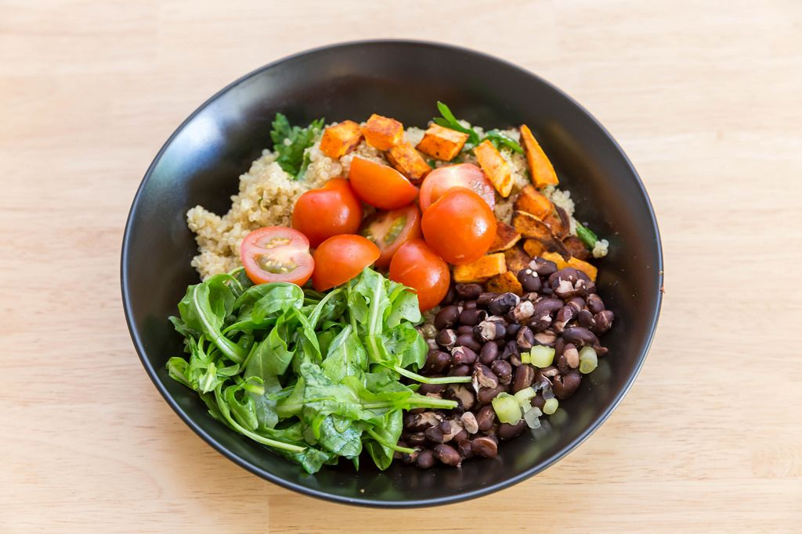

Hearty Fresh Porridge

Description
A hearty porridge for people who are short on time but have high standards. Fresh, delicious, vegan, versatile. With a few small changes, it can quickly be transformed into its Mediterranean counterpart.
Ingredients
Porridge
- 1 tablespoon extra virgin olive oil
- 80g oatmeal
- 300ml vegtable broth
- half a teaspoon dried thyme
- half a teaspoon dried oregano
- 1 tablespoon yeast flakes
- a handful of frozen peas
- salt
- black pepper
- 1 tablespoon almond butter
- 1 teaspoon lemon juice
Toppings
- 8 cherry tmatoes
- 8 pitte kalamata olives
- 1 spring onion
- a handful of arugula
- 2 tablespoons walnuts
Steps
- For the porridge, heat the olive oil in a pot and briefly brown the oats over medium heat.
- Deglaze with the vegetable stock, stir in the thyme, oregano, and yeast flakes
- Bring to a boil, then simmer on low heat for about 10 minutes, adding the mushrooms after 7 minutes.
- In the meantime, wash and halve the cherry tomatoes for the topping and roughly chop the olives.
- Wash and clean the spring onions and cut them into fine rings. Wash the arugula, pat dry, and chop coarsely. Chop the walnuts the same way
- Den fertigen Porridge mit salz und pfeffer abschmecken, mandelmus und zitronensaft unterheben und in schalen füllen.
- Top with tomatoes, olives, spring onions, arugula, and walnuts.
For the Mediterranean version, replace the arugula with basil and add 1 tablespoon of chopped dried tomatoes to the porridge. Roasted pine nuts go well with this.